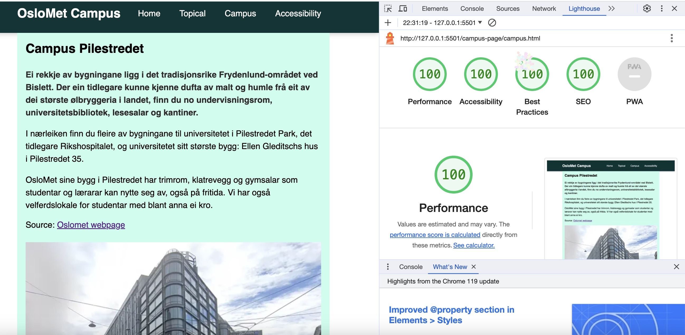
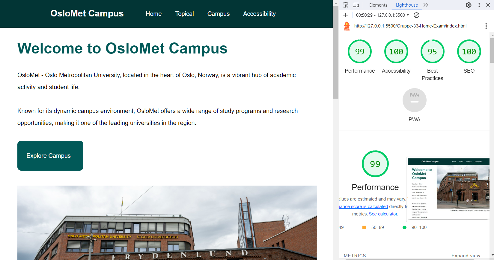

Lighthouse generated accessibility report for the Campus page

Lighthouse generated accessibility report for the Topical page
1. User Interface Design and Readability
In designing our website, our primary focus was on creating a user interface that is functional, accessible, and user-friendly. We made conscious decisions to facilitate easy reading and navigation, such as avoiding long, screen-wide text blocks in favor of shorter, wider formats that enhance readability. Great care was taken in crafting meaningful menu items and headings to guide users effectively. We designed our navigation bars and buttons to ensure seamless movement throughout the site, making it intuitive for users to find what they need. The text on our site is carefully broken into paragraphs of limited width and is further enhanced with sub-headings, aiding in both comprehension and user engagement. We have also paid special attention to the color scheme of our links, ensuring they are distinctly colored to provide a predictable and user-friendly experience. Additionally, we provided clear and descriptive labels for source links, indicating precisely where each link leads, which is crucial for users in efficiently finding and understanding the content.
2.Performance and Image Optimization
Our use of the Lighthouse tool, integrated into the Chrome browser, focused on both the performance and accessibility of our page. This tool was helpful in highlighting the importance of using next-generation image formats for enhanced performance. Initially, one of the main challenges we faced was the large size of images, which adversely affected the site's performance. To address this, we resized and converted all our images to the webp format, which improved load times and site efficiency. We also provided [alt] attributes for all images, an essential aspect of web accessibility. However, we faced a challenge with the color contrast in our button designs. The colors failed to provide the necessary contrast between the button text and its background. To rectify this, we selected a darker color for the buttons, which improved the contrast ratio and met accessibility guidelines. We have been consistently focusing on maintaining adequate contrast between text, headings, and backgrounds, ensuring that our website is universally readable and accessible.
3.Language and Meta Elements
Utilizing the Lighthouse tool also helped us to identify areas where our website lacked certain meta elements, like 'description', which are pivotal for both accessibility and SEO optimization. Drawing inspiration from well-designed web pages like OsloMet's, we added these crucial meta elements to our own site. Furthermore, we made a concerted effort to include a 'lang' attribute in our HTML element, significantly enhancing the site’s accessibility for non-native speakers and users of various translation tools and screen readers. This careful and conscious effort in our coding and design choices went beyond the capabilities of standard automated testing. Our aim was to ensure that our website is not just compliant with accessibility standards but also provides a user-friendly and universally accessible experience. By doing so, we believe we have created a site that is welcoming and easily navigable for a diverse range of users, regardless of their language or accessibility needs.